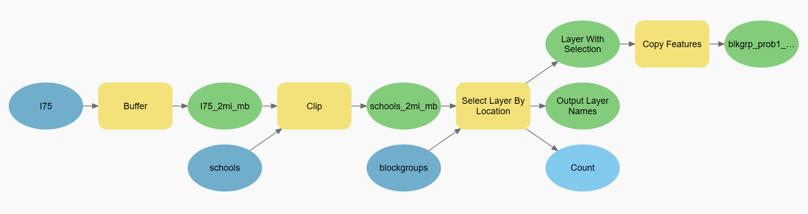
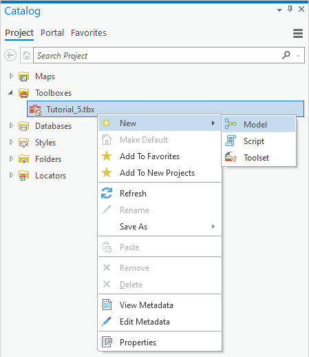
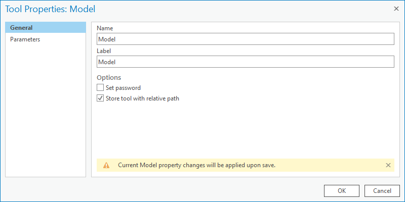

Introduction to ModelBuilder
Contents
Introduction to ModelBuilder#
Outline:
Feature classes in the class geodatabase
About this website (course materials)
A tour of ArcGIS Pro’s interface
Maps and Scene,
Contents and Catalog Pane
Geoprocessing
Tools and Toolboxes
Automation with ArcGIS ModelBuilder
What is ModelBuilder#
ArcGIS Pro ModelBuilder is a visual programming language for building geoprocessing workflows.
Build a model by adding and connecting data and tools
Iteratively process every feature class, raster, file, or table in a workspace.
Visualize your workflow sequence as an easy-to-understand diagram.
Run a model step-by-step, up to a selected step, or run the entire model.
Make your model into a geoprocessing tool that can be shared or can be used in Python scripting and other models.

Create a model#
Step 1. Navigate to the Toolboxes section in the Catalog pane.

Step 2. Modify the model’s Name and Label by go to the Properties menu.

Note
Name only supports alphanumeric characters.
Label is what you see in ArcGIS Pro support all characters.
Step 3. Start to design the model’s workflow by adding data and geoprocessing functions.
Problem 1#
Question:
Find census blockgroups that have at least one school within 2 miles of I-75
Solution
Create a 2-mile buffer around I-75 (Buffer)
Use this buffer to clip schools (Clip)
Spatial Join the schools to blockgroups (Spatial Join)
Select blockgroups that have at least one school (select by Location)
Save the selected features as a separate layer (Copy Features)
Problem 2#
Question:
Develop an index as a ratio of street length to the blockgroup area
Solution
Intersect roads by blockgroups (Intersect)
Spatial Join roads to blockgroups (Spatial Join)
Choose to Sum the length of the roads during spatial join
Add and calculate a new field as the ratio of total road lengths by blockgroups area (Calculate Field)